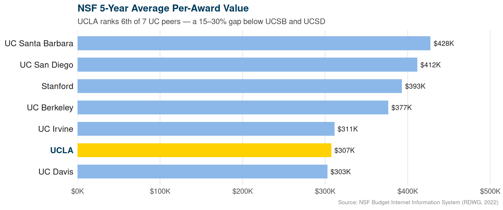
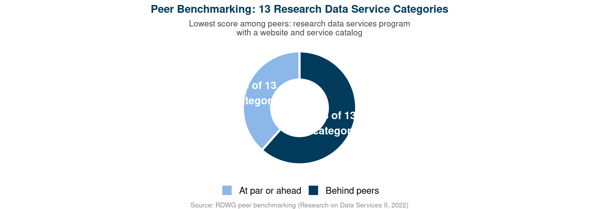
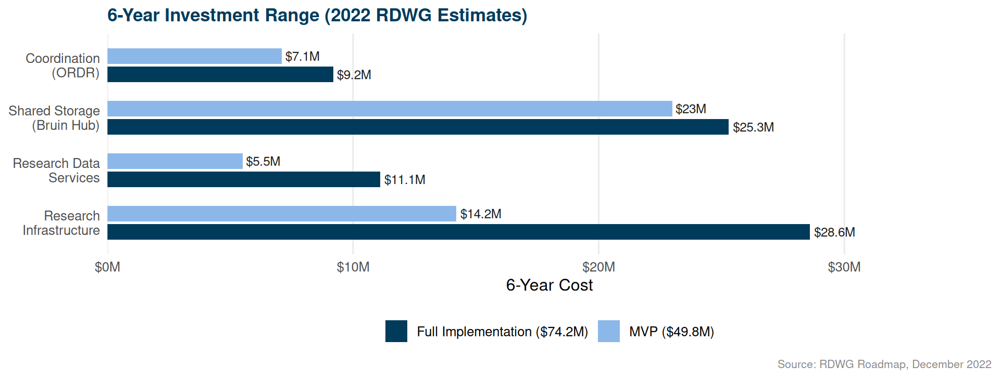

mindmap
root((Layered Research IT))
Centralize the Backbone
Network and IAM/SSO
Shared storage baseline
Cybersecurity
Cloud procurement
Compliance coordination
Preserve Domain Expertise
Research computing
HPC systems
Data services consulting
Research software engineering
Discipline-specific platforms
UCLA Already Has a Research Data Roadmap
What the RDWG Found — and What It Means for OneIT
Tim Dennis, UCLA Library Data Science Center
2026-03-01
Our Charge
The One IT Research WG is tasked with:
- Assessing critical research digital experiences
- Identifying gaps and investment priorities
- Evaluating campus IT roles
- Recommending improvements
UCLA’s Research Data Working Group spent 18 months doing exactly this.
Their findings are directly relevant — and already available to us.
What Was the RDWG?
Charged in early 2021 by five executive sponsors:
- Roger Wakimoto — Vice Chancellor for Research
- Ginny Steel — University Librarian
- Lucy Avetisyan — AVC & CIO
- Jim Davis — Vice Provost for IT
- Ellen Pollack — CIO, UCLA Health Sciences
18 months of work: campus-wide data gathering, faculty input, peer benchmarking across 13 service categories
Output: A Call to Action — 66-page roadmap, December 2022
UCLA’s NSF Per-Award Gap

The Core Problem: Coordination, Not Capability
UCLA fell behind peers in 8 of 13 research data service categories:

The Compliance Environment
The stakes have risen significantly since 2022:
- NIH Data Management & Sharing Policy — in effect January 2023; every proposal requires a funded data management plan
- OSTP public access mandate — in effect December 2025; all federally-funded research publicly available at no cost
- UC Research Data Policy — VCR responsible for campus compliance
- Export controls — tightened significantly on AI and dual-use research
UCLA lacks the staff and infrastructure to support compliance at the scale of a $1.7B research enterprise.
What Peer Institutions Do
“Investing in central services enhances distributed efforts — it does not replace them.”
What to Centralize — What to Preserve
Centralize the backbone:
- Network infrastructure, IAM/SSO, cybersecurity
- Shared storage (baseline for all faculty)
- Cloud procurement and cost coordination
- Compliance guidance and service catalog
Preserve domain expertise:
- Research computing (PI-facing, domain-specific)
- HPC and specialized research systems
- Data services consulting (FAIR, DMPs, repositories)
- UCLA Redivis — sensitive data, already built
“Centralize the backbone — not the craft.”
This model is called Academic Divisional Computing (ADC) — documented across UC institutions and peer research universities as the approach that preserves domain expertise while achieving back-end efficiencies.
The Four RDWG Recommendations
1. Central coordination unit (proposed: ORDR) Clear ownership of research data campus-wide — service catalog, compliance lead, accountability. Governance: VCR.
2. Shared research storage (proposed: Bruin Research Data Hub) Baseline allocation for every faculty member at no cost. On-prem + cloud hybrid.
3. Expanded research data services Data science consulting, digital asset management, researcher education. Built on existing Library/DSC capacity.
4. Expanded research infrastructure HPC expansion, P3/P4 compliant environment for restricted data, Cloud for Research program.
Investment Scale

Three Years Have Passed
None of the four core recommendations have been implemented.
Since 2022 the environment has intensified:
- NIH DMSP in full effect (January 2023)
- OSTP public access mandate in effect (December 2025)
- Google Drive crisis: 14PB of UCLA research data deleted or migrated over two years — campus now moving to paid commercial storage (April 2026 deadline active)
- Generative AI created new GPU compute equity issues across every discipline
- Federal funding more competitive and uncertain
The gaps identified in 2022 are larger now.
Yale and Cornell document a “dual-change trap”: reorganizing staff and building new infrastructure simultaneously produces turmoil. The One IT Design phase (July 2026–June 2027) is where staffing decisions land. This WG’s May 15 recommendations should explicitly inform that phase — not arrive after it starts.
What Changed Since 2022
quadrantChart
title Urgency × Anticipation (2026 view)
x-axis "Roadmap anticipated" --> "Not anticipated"
y-axis "Lower urgency" --> "Higher urgency"
quadrant-1 Act now
quadrant-2 Already planned — still waiting
quadrant-3 Monitor
quadrant-4 Emerging priorities
ORDR not created: [0.12, 0.92]
P3/P4 enclave missing: [0.18, 0.82]
Compliance intensification: [0.30, 0.88]
Federal funding uncertainty: [0.72, 0.78]
Generative AI: [0.88, 0.90]
Cloud complexity: [0.38, 0.52]
Research Software Engineering: [0.48, 0.58]
Data sovereignty: [0.62, 0.42]
What This Group Can Do
| WG Charge Area | RDWG Evidence Available |
|---|---|
| Research data management and storage | Peer benchmarking, Bruin Hub specs, use cases |
| Compliance and regulatory needs | NIH/NSF/OSTP analysis, P3/P4 requirements |
| Compute and infrastructure | Hoffman2 data, cloud analysis |
| Gaps and investment priorities | 8/13 benchmarking gaps, cost analysis |
| Central vs. local IT roles | Full layered model analysis |
| Equity in research access | DSC expansion plan, outreach program |
What I’m Asking
Build on what exists. 18 months of peer-reviewed evidence is available. We don’t need to start from scratch.
Adopt the layered model. Central coordination augments local expertise — it does not absorb it. This is what works at peer institutions.
Establish clear governance for research data. Research data is a research function. Coordination should be under VCR, with IT as the infrastructure partner.
Name the unfinished gaps. ORDR, P3/P4 enclave, baseline storage — three years overdue. This group can give them institutional momentum.
Source Materials
All documents available for download at ucla-data-science-center.github.io/rdwg-research-data-infrastructure
- Primary roadmap — A Call to Action (December 2022, 66 pages)
- Campus engagement report — Roadmap Update and Moving Forward (August 2023, 33 meetings)
- Peer benchmarking — Research on Data Services II (13 categories)
- Phase 2 materials — Implementation task analysis, Deans Council brief, Bruin Data Hub specs
Tim Dennis, UCLA Library Data Science Center — tdennis@library.ucla.edu

One IT Research Working Group — March 2026